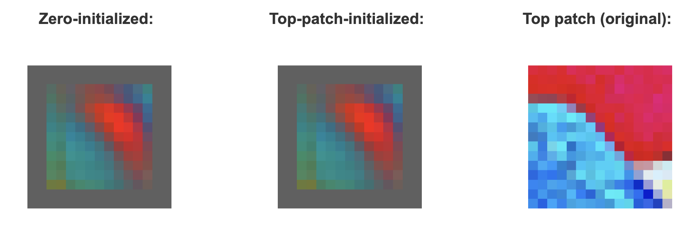
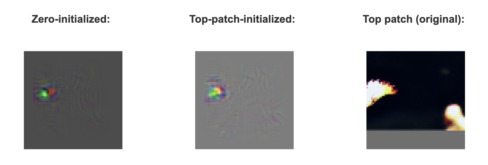
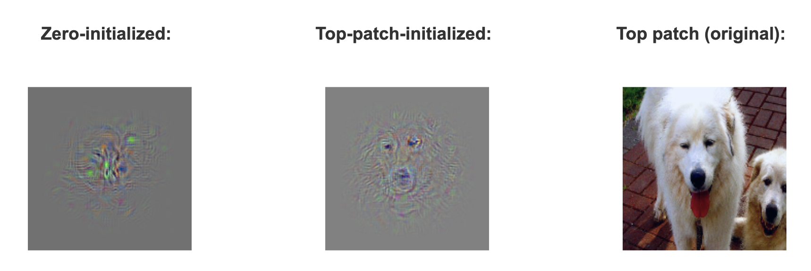

Tony Fu, Bair Lab, March 2023
In case the video player above doesn't work, here is the link to the presentation.
Deep Dream is a technique developed by Google that employs neural networks to generate artistic images. At the core of DeepDream lies a method known as Gradient Ascent. Gradient Descent, as shown in the pseudocode below, primarily focused on determining the extent to which a parameter contributes to the error in classification. This contribution is measured by taking the derivative of the loss function with respect to the parameter. We then take a tiny step in the opposite direction to achieve the locally steepest descent. By repeating this process iteratively, we hope to find the parameters that minimize the loss.
Gradient Descent Pseudocode:
However, gradient ascent is not typically employed to update the parameters. Instead, DeepDream uses it to iteratively modify an input image such that it increasingly elicits a stronger response from a specific channel of the convolutional layer. Observe that the pseudocode below and see how it differs from that of the gradient descent.
Gradient Ascent Pseudocode:
The two pseudocodes differ in three ways: First, we replace the parameters \( \theta \) with pixel values \( \rho \) because we are updating the image, not the parameters. Second, we replace the loss function \( f \) with the response function \( z \) (I am hesitant to call it an "activation" because I believe the term "activation" should be reserved for the value after the response has been passed through an activation function). Third, instead of subtracting the gradient, we add it. That is, in every iteration, we head in the direction with the steepest increase in the response.
DeepDream was introduced way back in 2015 (blog post). What makes this project novel? We know that DeepDream works by increasing the response of a specific channel within the convolutional layer. A channel is composed of a kernel that is applied across the x and y spatial dimensions of the input. However, only a few locations (if any) contain the features that would enhance the responses. What DeepDream accomplishes is the amplification of features that a kernel prefers at all spatial locations. Just think about it, how many images do you know of contain the same feature at every spatial location? This is why DeepDream remains an artistic tool today rather than a scientific one. I argue that in order to use DeepDream as a tool for interpretable machine learning, we must narrow our focus to a single spatial location, specifically at the neuron level.
My principal investigator (PI), Dr. Bair, along with his former Ph.D. student Dr. Dean Pospisil, and Dr. Pasupathy, proposed studying neural networks at the neuron level. They termed this approach Artiphysiology because it applies neurophysiology to artificial intelligence systems. This method enables easier comparisons between biological and artificial neurons. Using this approach, they investigated whether the primate mid-level visual area V4 neurons' ability to distinguish curvature shapes as a function of angular position is also found in AlexNet. Their research found a correspondence between the two.
The figure below illustrates the concept of Artiphysiology with regard to receptive field mapping. In Hubel and Wiesel's seminal cat experiment, they used a narrow, moving bar of light to stimulate the cat's retina. By systematically varying the orientation, position, and direction of movement of the light bar, they were able to map the so-called "receptive fields" (i.e., specific regions of the sensory space that a neuron is sensitive to) of individual neurons in the cat's visual cortex. This approach revealed that different neurons were selectively responsive to specific features such as the orientation and direction of movement of edges or lines in the visual field.

Their work revolutionized our understanding of the visual system and demonstrated the hierarchical organization of the visual cortex. In fact, the hierarchical organization of convolutional neural networks (CNNs) draws inspiration from the biological visual system (Fukushima, 1975). Artiphysiology aims to apply similar techniques used in the study of biological vision to investigate neural networks, which can be a valuable source of knowledge about the mechanisms of visual processing. By examining the response properties of artificial neurons in neural networks, researchers can gain insights into the computational principles.
Below is the file structure of the project. Please visit the GitHub repository for the source code:
.
├── LICENSE
├── README.md
├── docs
│ ├── index.html
│ ├── gallery.html
│ ├── playground.html
│ ├── css
│ │ ├── index.css
│ │ ├── gallery.css
│ │ └── playground.css
│ ├── js
│ │ ├── gallery.js
│ │ └── playground.js
│ ├── onnx_files
│ ├── images
│ └── spike.m4a
├── python
│ ├── requirements.txt
│ ├── convert_to_onnx.py
│ ├── grad_ascent_animation.py
│ ├── make_top_patch_png.py
│ ├── make_top_patch_initialized_grad_ascent.py
│ ├── make_zero_initialized_grad_ascent.py
│ ├── correlate_different_initializations.py
│ ├── make_plots.py
│ ├── grad_ascent.py
│ ├── image_utils.py
│ ├── model_utils.py
│ ├── spatial_utils.py
│ └── tensor_utils.py
I wrote spatial_utils.py last summer for research, and I referenced gordicaleksa's code to implement gradient_ascent.py (with significant modification). The Playground web application is a modified version of a web application I wrote last year, inspired by elliotwaite's work. The rest of the code are implemented for the project.
The dataset used in the project is a subset of ImageNet's test set. It consists of 50,000 images. They were already preprocessed into NumPy arrays with shape 3 x 227 x 277. The RGD values were batch-normalized to be roughly in the range of -1.0 to +1.0. I could not upload the dataset to the GitHub repository because it is too big (about 62 GB without compression). Please visit our lab website for downloading the dataset.
The actual implementation of grad_ascent.py is slightly more complex. Instead of manually adding the gradient, I utilized the SGD and Adam optimizers provided by torch.optim. These optimizers enable me to incorporate momentum in the update process. It's worth noting that although SGD stands for Stochastic Gradient Descent, it's not truly stochastic in this case. I am only presenting one image at a time to the network, so there isn't a random minibatch to sample from.

The GIF above displays AlexNet Conv2 Unit2 undergoing gradient ascent using three different optimizers, starting from an image composed of zeros. The result of the Adam optimizer is visually appealing and psychedelic, but it is too noisy and emphasizes parts of the image that aren't particularly important. I ultimately chose to use SGD without momentum, as I observed that adding momentum did not make a significant difference in many cases.
My initial plan when starting this project was to develop a method capable of mapping the receptive fields of neurons without providing the neural networks with any meaningful stimulus. Currently, receptive fields of neurons can be mapped using gradient and perturbation methods. There are numerous incredible resources available online:
However, those methods require natural images as input. To find the images (more accurately, image patches, since the receptive field size of a single neuron is almost always smaller than a typical image) that serve as good stimuli for the neurons, Dr. Bair and Dr. Pospisil presented the 50,000 images mentioned earlier to the neural network. As a reminder, the convolution (or more accurately, cross-correlation) operation slides the unit's kernel along the two spatial dimensions of the input. The first thing they did was to find the spatial locations that produced the maximum (most positive) responses. They repeated this process for all 50,000 images, and then ranked the resulting max locations to determine which image patches yielded the strongest responses. A drawback of this technique is that we are limited by the size of the dataset. What if there isn't an image patch in the dataset that activates the neuron? Also, by using natural images as stimuli for receptive field mapping, we are providing a strong prior that will influence the results. Unlike stimuli such as bars, gratings, and Pasupathy shapes, it is difficult to describe natural images mathematically. Consequently, using natural images as stimuli makes it challenging to systematically characterize the neuron.
In this project, I experimented with two different initialization methods for gradient ascent: using an image consisting of zeros and using the image patch that produced the maximum response, which I refer to as the "top patch" for brevity. For gradient ascent initialized with the top patch, I subtracted the top patch from the resulting image, so that only the added gradients are displayed. The pseudocode for this process is provided below:
Top-Patch Initialized Gradient Ascent Pseudocode:
AlexNet Conv1 Unit2: In the figure below, the left panel displays the result of gradient ascent initialized with zeros. The middle panel presents the outcome of gradient ascent initialized with the top patch, and the right panel showcases the top patch itself. As you can observe, the three panels are nearly identical. This similarity occurs because, by itself, Conv1 is a linear operator, so the gradient at each step will just be the unit's kernel.
AlexNet Conv2 Unit2: As the image below demonstrates, this unit prefers a bright, ball-shaped object situated somewhere to the left of the receptive field. The three images also appear similar to each other.
AlexNet Conv4 Unit23: As we move to deeper layers, the gradient ascent results from different initial images no longer resemble each other, and their interpretation becomes more challenging.
I calculated the Pearson correlation coefficient as a measure of image similarity between the gradient ascent results, though I am uncertain about the scientific validity of using this metric. As expected, the correlation is perfect in Conv1 but sharply diminishes afterward.

Please visit the Gallery to see more results.